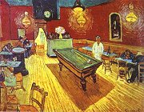
Gogh: Kavárna v noci
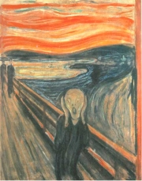
Munch: Køik
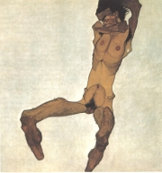
Schiele: Sedící mužský akt (autoportrét)
|
EXPRESIONISMUS
Expresionismus se prosadil na zaèátku 20. století pøedevším v nìmecky mluvících zemích. Expresionisté kladli dùraz na výraz (exprese) a odmítali realismus i impresionismus. Chtìli vyjádøit hluboké a krajní prožitky, pøedevším touhu, úzkost, depresi, zmar, smrt a rùzné psychické stavy, èasto chorobné. Jejich pohled na svìt byl znaènì pesimistický. Podle expresionistù byla celá spoleènost i jednotlivci v naprostém rozkladu.
Výtvarní umìlci navazovali na tvorbu Nizozemce Vincenta van Gogha a Nora Edvarda Muncha. Šlo o malíøe sdružené v drážïanské skupinì Die Brücke (Most) a mnichovské skupinì Der Blaue Reiter (Modrý jezdec) – Vasilij Kandinskij, Franz Marc, Alfred Kubin nebo Paul Klee. V Èechách se k expresionismu hlásili èlenové Osmy (1907-1908) – malíøi Emil Filla, Otakar Kubín nebo Bohumil Kubišta. V Èeském Krumlovì tvoøil rakouský malíø Egon Schiele.
Nejvýznamnìjšími expresionisty byli básníci Georg Trakl a Gottfried Benn. Pro jejich tvorbu je typická útržkovitost, naléhavost a vypjatost. Nouze v ní není ani o konflikty, pøehnané emoce a rùzné projevy šílenství.
Nìmecký expresionismus dosáhl vrcholu v letech 1910 až 1920 (tzv. expresionistické desetiletí). Ve 20. letech se k nìmu hlásila èeská Literární skupina. Expresionistický byl inscenaèní styl divadelního režiséra K.H.Hilara. K tomuto smìru bývají poèítáni i jinak tìžko zaøaditelní autoøi jako Weiner (Škleb), Èapek (Trapné povídky), Deml (Hrad smrti), Váchal, Klíma nebo Vanèura, sami se ovšem za expresionisty nepovažovali.
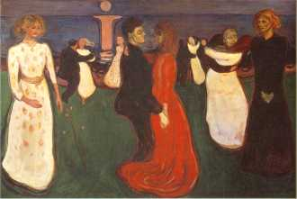
Munch: Tanec života
|
Filmový expresionismus
Nìmecký filmový expresionismus spadá do nìmé éry filmu ve 20. a 30. letech 20. stol. Vyniká pøehnanými gesty, hrou svìtel a stínù, výtvarným pojetím kulis nebo hororovými námìty. Režisér Friedrich Wilhelm Murnau natoèil snímky Upír Nosferatu nebo Faust, Robert Wiene Kabinet doktora Caligariho a Fritz Lang film Metropolis.
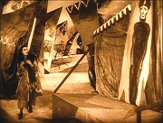
Kabinet doktora Caligariho
Jak na tebe pùsobí expresionistické obrazy?
Vidìl/a jsi nìjaký expresionistický film? Mùžeš ho doporuèit spolužákùm?
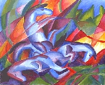
Marc: Konì
|
Georg Trakl (1887-1914)
Rakouský spisovatel Trakl byl lékárníkem, ale plnì se ztotožnil s prokletými básníky. Únik z incestního vztahu k vlastní sestøe hledal v alkoholu a dalších drogách. Na zaèátku 1. sv. války musel narukovat jako ošetøovatel ranìných vojákù. Z bezmocnosti a hrùz, kterým musel pøihlížet, se duševnì zhroutil a v krakovské nemocnici se pøedávkoval kokainem. Prvotinu Básnì stihl vydat ještì za svého života, druhá kniha Šebestián ve snu vyšla až deset let po jeho smrti.
|
Georg Trakl: Básnì
Traklova tvorba je plná obsesí a hrùz. Zobrazoval pøedevším rozklad, úpadek, tlení nebo smrt. Ve svých básních zdùrazòoval pomíjivost života.
|
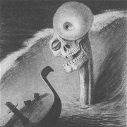
Kubin: Hrùza
Které rysy expresionismu objevíš v Traklových básních?
|
Gottfried Benn (1886-1956)
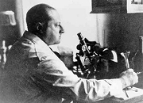
Nìmecký básník Gottfried Benn je autorem knih Morgue a jiné básnì, Statické básnì, Fragmenty nebo autobiografie Dvojí život. Zpoèátku podporoval nacisty, ale pozdìji se od nich distancoval, èímž si vysloužil zákaz publikování. Po skonèení 2. sv. války pracoval v Západním Berlínì jako lékaø. Bývá považován za expresionistu, ale sám sebe oznaèoval jako „univerzálního nihilistu“.
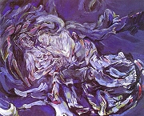
Oskar Kokoschka: Bouøe
|
Gottfried Benn: Morgue a jiné básnì
Benn v sobì nedokázal zapøít lékaøe a na smrt se dívá s profesionálním odstupem, èímž ještì více vyniká její hrùznost.
Další expresionisté
Expresionismus ovlivnil celou øadu nìmecky píšících autorù. Reprezentativní výbìr vyšel v èeské antologii Haló, je tady vichr – vichøice! Expresionismus.
|
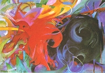
Marc: Bojující formy
Jakými prostøedky dosahuje Gottfried Benn expresivního úèinku?
Jak na tebe pùsobí jeho poezie?
Jaké pocity v tobì vyvolávají jednotlivé básnì?
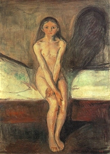
Munch: Puberta
Zkus napsat expresionistický text.
|
Literární skupina
V Brnì se roku 1921 ustavila Literární skupina, jejíž èlenové se otevøenì pøihlásili k expresionismu a spoleènì vystoupili manifestem Naše nadìje, víra a práce. Pøedsedou tohoto uskupení byl dramatik Lev Blatný, teoretikem František Götz. Ze známìjších spisovatelù byli èleny Èestmír Jeøábek, Zdenìk Kalista, Josef Knap, Jiøí Wolker nebo Konstantin Biebl, ale vìtšinou jen krátce. Až do svého rozpadu roku 1929 vydávala Literární skupina èasopis Host, ve kterém zprvu publikovali i èlenové Devìtsilu.
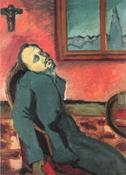
Filla: Ètenáø Dostojevského
|
Literární skupina: Naše nadìje, víra a práce
Literární skupina se pokoušela navázat spolupráci s Devìtsilem. V èasopisu Host sice vyšly dùležité manifesty poetismu a další poetistická díla, ale programové rozpory brzy obì uskupení definitivnì rozdìlily. Zatímco èlenové Devìtsilu tíhli ke komunistické ideologii, pøíslušníci Literární skupiny mìli blíže k umírnìnému socialismu a masarykovskému pojetí demokracie.
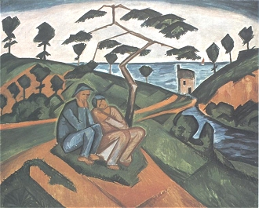
Kubín: Krajina u moøe
|
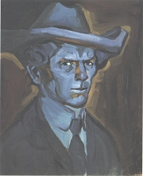
Kubišta: Modrý autoportrét
Co si myslíš o programu Literární skupiny?
Se kterými názory souhlasíš a které odmítáš? Proè?
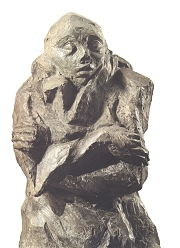
Gutfreund: Úzkost
|
Internetové stránky
Der Blaue Reiter, skupina
Der Blaue Reiter a Kandinskij
Die Brücke, skupina
Munch, malíø
Munch, malíø
Marc, malíø
Kubin, malíø
Kubin, malíø
Schiele, malíø
Schiele, malíø
Trakl
Benn
Èapek: Trapné povídky
Exkurze
Egon Schiele art centrum, Èeský Krumlov
Munchovo muzeum
Franz Marc Museum, Kochel am See
Filmy
Kabinet doktora Caligariho, režie R.Wiene
Kabinet doktora Caligariho, režie R.Wiene
Metropolis, režie F.Lang
|
Doporuèená èetba
Benn, Gottfried: Básnì, pøel. L.Kundera, Erm, Praha 1995
Èapek, Karel: Boží muka, Trapné povídky, Èeskoslovenský spisovatel, Praha 1981
Expresionismus a èeské umìní, Národní galerie v Praze, Praha 1994 (katalog k výstavì)
Expresionisten, Berlín 1986
Fialová-Fürstová, Ingeborg: Expresionismus, Votobia, Olomouc 2000
Haló, je tady vichr – vichøice! Expresionismus, pøel. L.Kundera, Èeskoslovenský spisovatel, Praha 1969
Chalupecký, Jindøich: Expresionisté, Praha 1992 (Weiner, Deml, Klíma, Hašek)
Kroutvor, Josef: Egon Schiele, Odeon, Praha 1991
Kubin, Alfred: Zemì snivcù, Fantastický román, pøel. L.Kundera, Mladá fronta, Praha 1997
Míèko, Miroslav: Expresionismus, Obelisk, Praha 1969
Panoráma expresionismu, IN: Svìtová literatura è. 4/1990
Podivínský, M.: Nástin expresionismu v èeské poezii
Siblík, Jiøí: Otakar Kubín – Coubine, Malíøské dílo, Èeský art holding, Praha 2000
Tomeš, Jan M.: Oskar Kokoschka, Odeon, Praha 1988
Trakl, Georg: Básnì, pøel. B.Reynek, Pavel Maur, Náchod 1995
Trakl, G.: Trosky køídel Ikarových, Praha 1943
Wittlich, Petr: Edvard Munch, Praha 1988
|
Vypracuj písemný referát o nìkteré z uvedených knih.
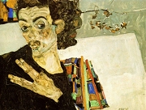
Schiele: Portrét
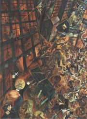
George Grozs: Pohøeb básníka Oskara Panizzy
|
|